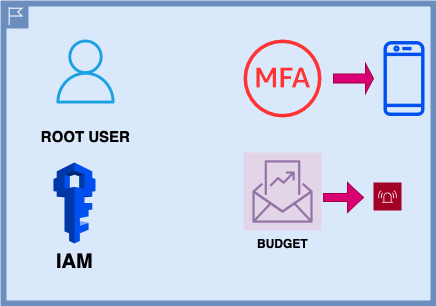
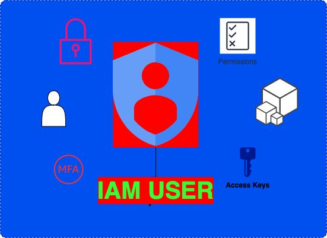

Root-user,MFA,Budget,IAM
**Here I create a Root user, I activated MFA to enhance the security of our AWS account. I activated the IAM because by default it is deactivated, and finally I activated and created a budget, so AWS can let us know when we are reaching our max budget**
In Amazon Web Services (AWS), the "root user" refers to the initial administrative user account created when you first set up an AWS account. The root user has the highest level of access and control within your AWS account and is, therefore, the most powerful and privileged user. Here are some key characteristics and considerations regarding the AWS root user account:
1. Initial Setup: When you create an AWS account, you are asked to set up the root user account. This account is used to establish the AWS account's billing and payment information, and it is the only account with full administrative access from the outset. 2. Full Administrative Access: The root user has unrestricted access to all AWS services and resources. They can create, manage, and delete AWS resources, manage billing information, and modify account settings. 3. Security Implications: Because the root user has such extensive access, it should be protected with the highest level of security. This includes enabling multi-factor authentication (MFA) to add an extra layer of security to the account. 4. Best Practices: It's generally considered a best practice not to use the root user account for everyday tasks or resource management. Instead, AWS recommends creating IAM (Identity and Access Management) users with the necessary permissions for specific tasks and using those accounts to perform actions within your AWS environment. This helps improve security and maintain a clear audit trail. 5. Account Recovery: If you ever lose access to the root user account due to, for example, a lost password or MFA device, AWS provides account recovery procedures to help you regain access. These procedures typically involve contacting AWS support and following a set of identity verification steps. 6. Account Ownership: The root user is the owner of the AWS account and has full control over account settings, billing, and permissions for other users. 7. Shared Responsibility Model: It's important to understand the shared responsibility model in AWS. While AWS is responsible for the security of the cloud infrastructure, the root user and AWS account holders are responsible for the security of their own resources and data, thats why it is very important to use MFA (Multi Factor Authentication) to have an extra security step in your AWS account. In summary, the AWS root user account is the initial and most privileged account in your AWS account. Due to its extensive access and high level of privilege, it should be protected with strong security measures, and it's recommended to create and use IAM users for day-to-day operations within your AWS environment to enhance security and manage permissions more effectively.
IAM User, Access Keys, CLI
more comming up
more comming up
more comming up